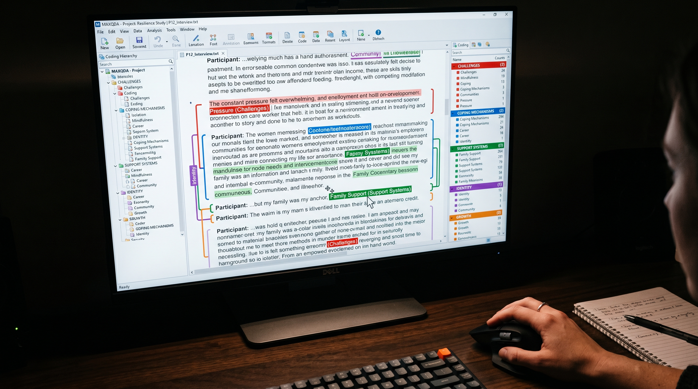
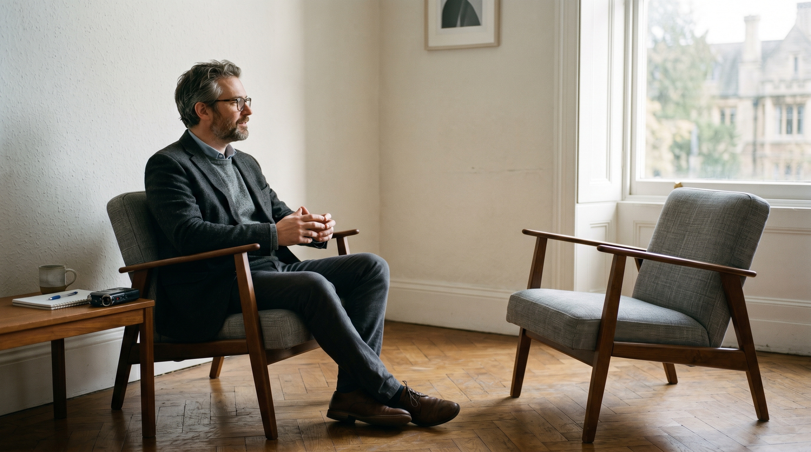
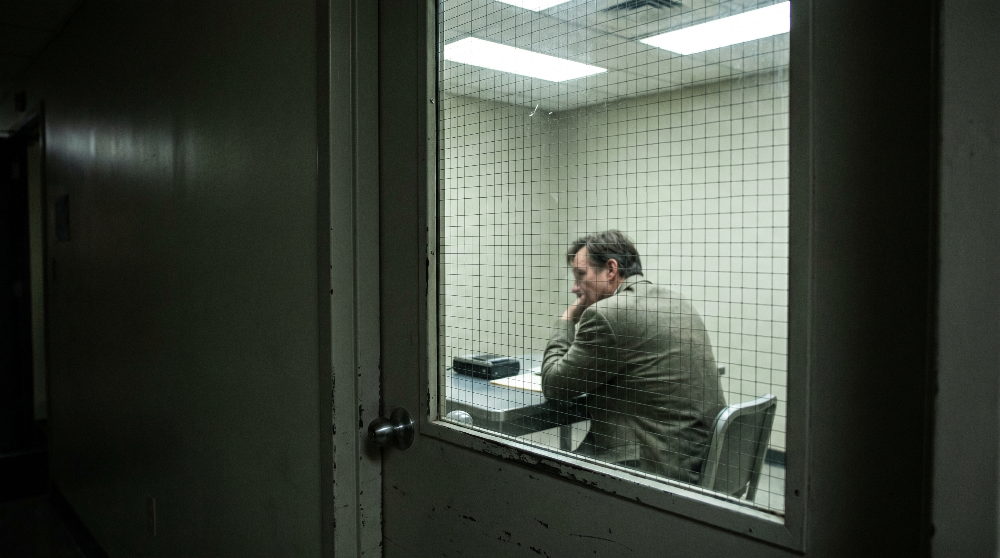
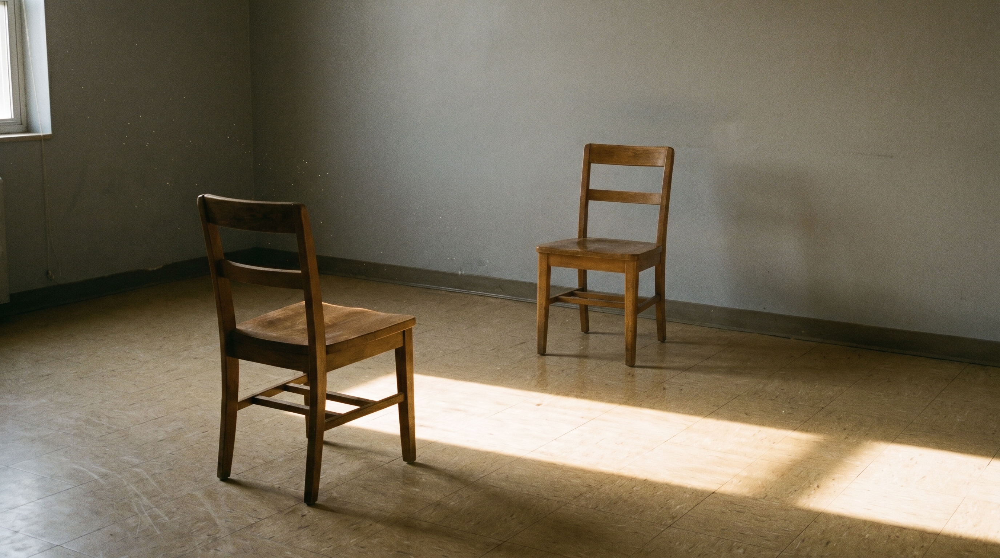

Project Context
§ 01The Challenge / Hypothesis
Clinical frameworks for trauma and mental health outcomes focus on the individual: diagnosis, treatment, recovery. But trauma doesn't happen in a social vacuum. It happens in communities, institutions, and systems that either support recovery or compound damage. Adams' work asks: what does the sociological lens reveal about long-term mental health outcomes that the clinical model misses?
The Solution / Innovation
Adams applies sociological methodology — large-scale qualitative and quantitative research on communities, social structures, and institutional responses — to understand how collective experience shapes individual mental health over time. His research reframes trauma as a social phenomenon as much as a psychological one. The photographic challenge: this research is about people and stories, not laboratories. The images need to carry emotional and intellectual weight without exploiting vulnerable subjects.
Scientific Workflow
§ 02Community Engagement and Research Design
Adams' work begins in relationship — identifying communities, building trust, designing research that respects participant experience. [Photographable: meeting settings, research planning, community contexts where appropriate and cleared]
Qualitative Interview Process
In-depth interviews are the core data collection method. The interview space is a room where people tell difficult truths. [Photographable: interview room setup, researcher listening posture — never identifiable participants without full consent]
Data Coding and Analysis
Qualitative data coded, categorized, and analyzed — finding patterns in large volumes of interview text and community data. [Photographable: computer-based coding, printed interview transcripts with annotations, data visualization]
Dissemination and Community Return
Research findings shared back with communities — the ethical commitment to return something to the people whose stories made the research possible.
---
Shot Concepts
§ 03Adams in a spare, quiet space — an interview room, a simple office — looking directly into camera. The composition should be restrained: not a busy academic office, not a laboratory. Just the researcher and the weight of what he carries. The portrait of someone who has spent years sitting with people's most difficult experiences.
- Spare, simple environment — avoid clutter and visual noise
- Warm but low-key lighting: more shadow than light
- His expression should be open, thoughtful, present — not professional-headshot
- Vertical format, tight framing — no environmental distraction
- The quality of attention in his face is the image
Technical Notes
Setup Diagram

AI Visualization Prompt
An interview transcript — anonymized — on a desk, covered in handwritten analytical annotations. Highlighted passages, margin notes, question marks, bracketed themes. The material trace of the research process: someone's story turned into data, and a researcher thinking through what it means.
- Use a real (anonymized) transcript with genuine coding marks
- Warm side light to reveal the texture of handwriting and annotation
- A hand holding a pen, mid-annotation, adds active energy
- Ensure no identifying information is visible in the frame
Technical Notes
Setup Diagram

AI Visualization Prompt
Adams in the interview room — the actual space where the research happens. Not sitting at a desk. Seated in one of two facing chairs, the other chair empty. The empty chair is the image. It is every person who has sat across from him. It is the whole study.
- Two chairs facing each other; Adams in one, camera framing the empty chair beside or behind him
- Spare, quiet room — a neutral wall, soft light
- His posture should be relaxed and open — the natural posture of someone who listens for a living
- The empty chair is the compositional weight; position it deliberately
Technical Notes
Setup Diagram

AI Visualization Prompt
A computer monitor showing qualitative coding software — interview text on screen with color-coded thematic categories applied. The moment where human experience becomes analyzable data. No human subject in the main frame.
- Use Atlas.ti, NVivo, or whatever software Adams actually uses
- The color-coded categories on screen create a visual language — warm codes for relational themes, cool for structural, etc.
- Shoot at a slight angle to minimize screen reflections
- A hand or cursor visible on screen keeps it active, not static
Technical Notes
Setup Diagram
AI Visualization Prompt
The conceptual problem with the original prompts: A man in a chair and annotated papers are reasonable but too literal. This story is about what happens in private spaces between a researcher and people who have been through something terrible. The images should carry silence and weight, not data.
The idea: The camera is in the hallway, looking through the small rectangular wire-mesh glass window in a closed interview room door. Adams is visible inside, seated, partially obscured by the door frame and the wire mesh of the safety glass. His face is slightly distorted. He appears to be listening to something we cannot hear. We are outside the room where the hard things happen — the camera is always outside. This is an image about the irreducible privacy of what Adams studies.
Technical Notes
Setup Diagram

AI Visualization Prompt
The idea: The interview room, completely empty. Two chairs facing each other. A rectangle of late afternoon light falling diagonally across the floor from a window off-frame. The chairs are not centered — the listener's chair is slightly closer to camera, slightly turned. Motes of dust in the light beam. No human beings. But the room is full of every conversation that has ever happened in it. This is the most emotionally direct image in the collection. The absence is the subject.
Technical Notes
Setup Diagram
